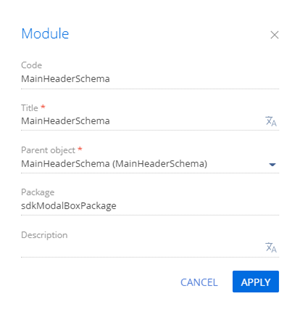

1. Создать действие процесса
- Перейдите в раздел Конфигурация (Configuration) и выберите пользовательский пакет, в который будет добавлена схема.
-
На панели инструментов реестра раздела нажмите Добавить —> Действие процесса (Add —> User task).
-
Заполните свойства действия процесса.
- Код (Code) — "UsrShowModalPageUserTask".
- Заголовок (Title) — "Показать модальное окно (действие процесса)" ("Show modal page (process user task)").
Для применения заданных свойств нажмите Применить (Apply).
2. Добавить параметры действия процесса
-
Добавьте параметр, который выводит пользователю сообщение.
- В узле Параметры (Parameters) нажмите кнопку
/scr_add_button.png) .
. -
Заполните свойства параметра.
- Код (Code) — "UsrDialogText".
- Название (Title) — "Текст в диалоговом окне" ("Dialog message text").
- Тип (Type) — выберите "Строка" ("Text").
- Установите признак Обязательный для заполнения (Required).
- В узле Параметры (Parameters) нажмите кнопку
-
Добавьте параметр, который из процесса в элемент передает названия кнопок, которые необходимо отобразить пользователю. Параметр в строке принимает коды кнопок, которые разделены запятой.
- В узле Параметры (Parameters) нажмите кнопку .
-
Заполните свойства параметра.
- Код (Code) — "UsrCommaSeparatedReturnCodes".
- Название (Title) — "Коды возврата кнопок через запятую" ("Button return codes separated with comma").
- Тип (Type) — выберите "Строка" ("Text").
- Установите признак Обязательный для заполнения (Required).
- В узле Параметры (Parameters) нажмите кнопку
-
Добавьте параметр, который содержит код нажатой кнопки.
- В узле Параметры (Parameters) нажмите кнопку .
-
Заполните свойства параметра.
- Код (Code) — "UsrReturnCode".
- Название (Title) — "Код нажатой кнопки" ("Selected button code").
- Тип (Type) — выберите "Строка" ("Text").
- Установите признак Результирующий (Resulting).
- В узле Параметры (Parameters) нажмите кнопку
3. Реализовать действие процесса на back-end стороне
-
Настройте логирование процесса.
-
C помощью директивы using добавьте необходимые пространства имен.
-
Реализуйте логику работы логирования и действия процесса.
-
- На панели инструментов дизайнера нажмите Опубликовать (Publish).
4. Реализовать обработку действия процесса на front-end стороне
- Перейдите в раздел Конфигурация (Configuration) и выберите пользовательский пакет, в который будет добавлена схема.
- На панели инструментов реестра раздела нажмите Добавить —> Модуль (Add —> Module).
/scr_add_module.png)
-
Заполните свойства модуля.
- Код (Code) — "UsrShowModalPageUserTaskMixin".
- Заголовок (Title) — "ShowModalPageUserTaskMixin".
-
В дизайнере модуля добавьте исходный код.
- На панели инструментов дизайнера нажмите Сохранить (Save).
5. Создать замещающую модель представления контейнера
- Перейдите в раздел Конфигурация (Configuration) и выберите пользовательский пакет, в который будет добавлена схема.
-
На панели инструментов реестра раздела нажмите Добавить —> Замещающая модель представления (Add —> Replacing view model).
/scr_add_replacing_module.png)
-
Заполните свойства модуля.
- Код (Code) — "MainHeaderSchema".
- Заголовок (Title) — "MainHeaderSchema".
- Родительский объект (Parent object) — выберите "MainHeaderSchema".
 -
В дизайнере модуля добавьте исходный код.
- На панели инструментов дизайнера нажмите Сохранить (Save).
6. Создать бизнес-процесс отображения модального окна
- Перейдите в раздел Конфигурация (Configuration) и выберите пользовательский пакет, в который будет добавлена схема.
-
На панели инструментов реестра раздела нажмите Добавить —> Бизнес процесс (Add —> Business process).
-
Заполните свойства процесса.
- На панели настройки элементов заполните свойство Заголовок (Title) — "Show Modal Page Example Process".
- На вкладке Настройки (Settings) панели настройки элементов заполните свойство Имя (Code) — "UsrShowModalPageExampleProcess".
-
Реализуйте бизнес-процесс.
-
Добавьте действие процесса.
-
В области элементов дизайнера нажмите Действия системы (System actions и разместите элемент Выполнить действие процесса (User task) в рабочей области дизайнера процессов между начальным событием Простое (Simple) и завершающим событием Останов (Terminate).
-
Заполните свойства действия процесса.
- Какое пользовательское действие выполнить? (Which user task to perform?) — выберите "Показать модальное окно (действие процесса)" ("Show modal page (process user task)").
-
Заполните значения параметров действия процесса.
- Текст в диалоговом окне (Dialog message text) — "Вам нравится новое окно?" ("Do you like new window?").
- Коды возврата кнопок через запятую (Button return codes separated with comma) — "yes,no,cancel".
-
-
Добавьте автогенерируемую страницу.
-
В области элементов дизайнера нажмите Действия пользователя (User actions и разместите элемент Автогенерируемая страница (Auto-generated page) в рабочей области дизайнера процессов.
-
Заполните свойства автогенерируемой страницы.
- Заголовок (Title) — "YES".
- Название страницы (Page title) — "Нажато YES" ("Pressed YES").
-
Добавьте кнопку.
- В блоке Кнопки (Buttons) нажмите кнопку .
-
Заполните свойства кнопки.
- Название (Caption) — "OK".
- Сохраните изменения.
- В блоке Кнопки (Buttons) нажмите кнопку
Настройки автогенерируемой страницы представлены на рисунке ниже.
-
-
Настройте условный поток.
- В меню действия процесса выберите Добавить поток (Add flow) и соедините действие процесса с автогенерируемой страницей.
-
Трансформируйте поток управления в условный поток. Для этого нажмите кнопку и в меню потока выберите Условный поток (Conditional flow).
-
Заполните свойства условного потока.
- Заголовок (Title) — "yes".
-
Настройте условия перехода.
- На панели настройки элементов в свойстве Условие перехода (Condition to move down the flow) нажмите кнопку .
- Выберите элемент процесса "Показать модальное окно (действие процесса)" ("Show modal page (process user task)").
- Двойным кликом выберите параметр процесса "Код нажатой кнопки" ("Selected button code").
-
Задайте формулу для параметра.
- Сохраните изменения.
- Аналогично добавьте автогенерируемую страницу NO с соответствующим условным потоком no.
-
Настройте поток по умолчанию.
- В меню действия процесса выберите Добавить поток (Add flow) и соедините действие процесса с завершающим событием Останов (Terminate).
-
Трансформируйте условный поток в поток по умолчанию. Для этого нажмите кнопку и в меню потока выберите Поток по умолчанию (Default flow).
-
Заполните свойства потока по умолчанию.
- Заголовок (Title) — "cancel".
Бизнес-процесс представлен на рисунке ниже.
-
- На панели инструментов дизайнера процессов нажмите Сохранить (Save).
Результат выполнения примера
Бизнес-процесс Show Modal Page Example Process доступен для запуска в любом разделе приложения Creatio. Например, запустим бизнес-процесс из раздела Контакты (Contacts).
Чтобы запустить бизнес-процесс Show Modal Page Example Process из раздела Контакты (Contacts):
- Перейдите в раздел Контакты (Contacts).
- На панели разделов нажмите кнопку .
- Выберите бизнес-процесс Show Modal Page Example Process и нажмите Запустить (Run).
В результате выполнения бизнес-процесса Show Modal Page Example Process в разделе Контакты (Contacts) отображается модальное окно.
-
При нажатии на кнопку Yes отображается страница Нажато YES (Pressed YES) c кнопкой OK.
-
При нажатии на кнопку No отображается страница Нажато NO (Pressed NO) c кнопкой OK.
- При нажатии на кнопку Cancel модальное окно закрывается.
Результаты логирования запросов отображаются в файле Common.log корневой папки приложения. Используя инструменты разработчика в браузере, можно отследить WebSocket-сообщения, которые переданы из back-end части во front-end часть.